Welcome to Our Upcountry Heaven
Discover the beauty and tranquility of the upcountry with us. Whether you're seeking a peaceful retreat, exciting adventures, or a taste of local culture, our site has everything you need to plan your perfect getaway. Explore our pages for detailed guides, tips, and exclusive offers to make your upcountry experience unforgettable
Welcome, and happy exploring!
Hikes
 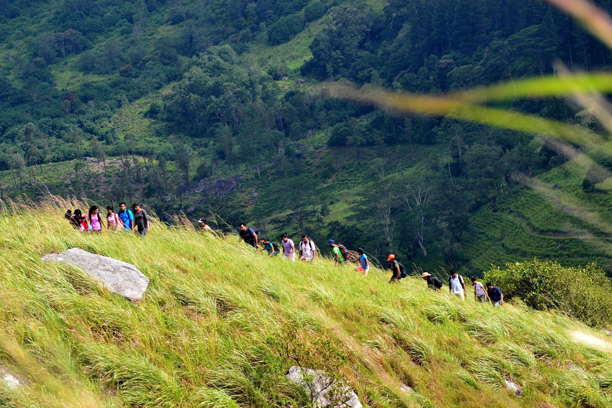
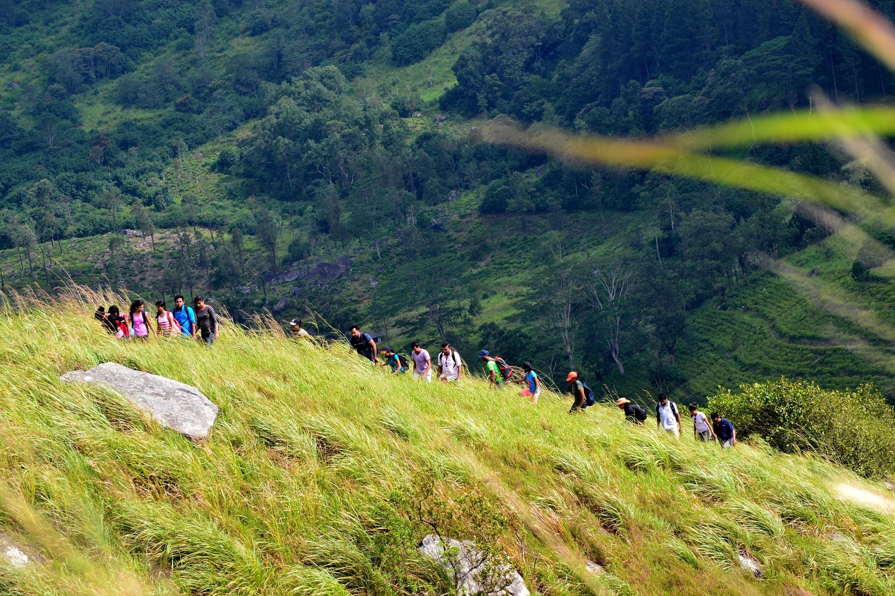
 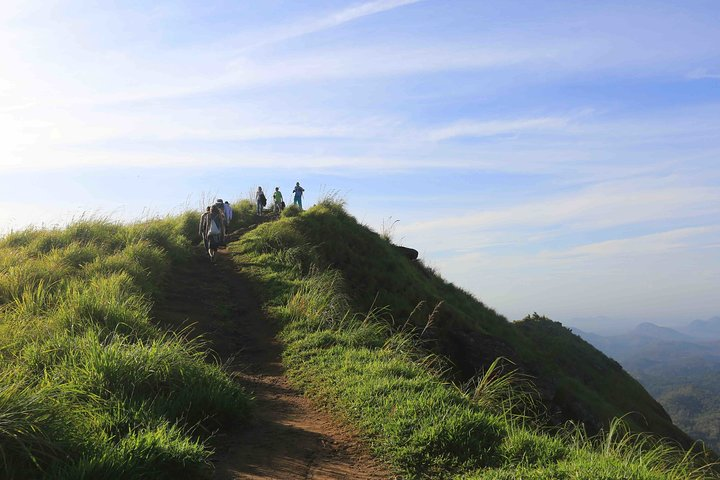
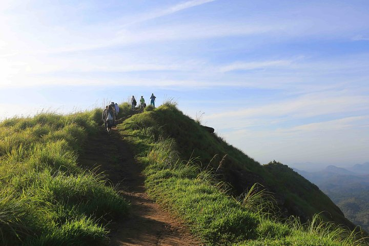
1. Hanthana Hike
Hanthana is a splendid mountain range situated in the Kandy district, renowned for its suitability for hiking, camping, and birdwatching. The summit offers breathtaking panoramas of the Kandy city, the Knuckles mountain range, the Dolosbage range of Aranayake, and the hills of the Sabaragamuwa region. The ascent to the peak typically requires more than 5 hours to complete.


2. Adam's Peak
Adam's Peak, also known as Sri Pada and Samanala Kanda in the local language, is a revered mountain in the central province of Sri Lanka, with an elevation of 2243 meters (7359 feet). At its summit lies a footprint that holds religious significance for multiple faiths. Buddhists regard it as the footprint of Lord Buddha, while Hindus associate it with Hanuman or Shiva, and Islamic and Christian traditions link it to Adam or St. Thomas. This site is revered by adherents of all religions in Sri Lanka.
Access to the mountain is facilitated by six trails: Ratnapura-Palabaddala, Hatton-Nallathanni, Kuruwita-Erathna, Murraywatte, Mookuwatte, and Malimboda. The mountain straddles the border of the Ratnapura and Nuwara Eliya districts. The period from December to March is particularly popular for ascending Adam's Peak.


3. Ohiya to Idalgashinna Railway Hike
Idalgashinna and Ohiya are two significant railway stations located along the Badulla railway line, offering a picturesque view as the land steeply descends on both sides. The total length of the hike is 8 kilometers, and it involves crossing 14 tunnels. On average, completing this hike takes approximately 4 hours. It's important to be cautious of the presence of bats inside the tunnels.
 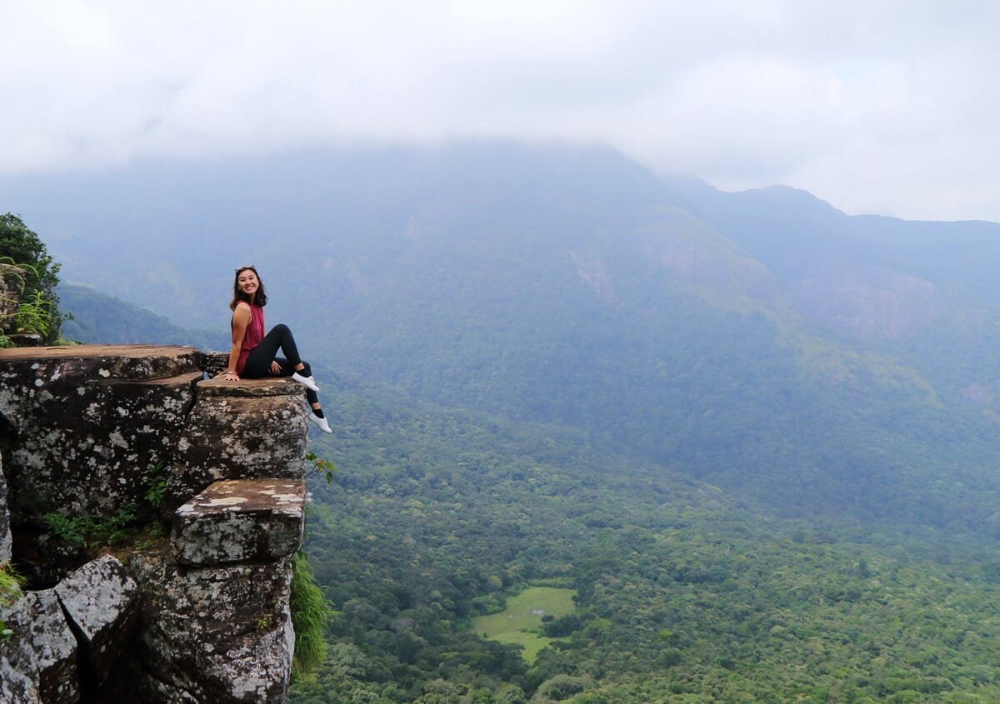
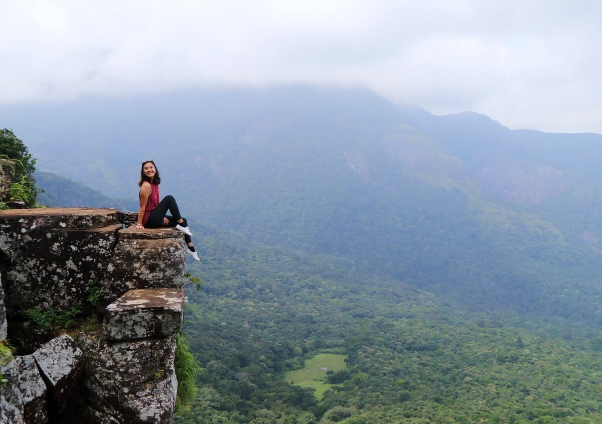

 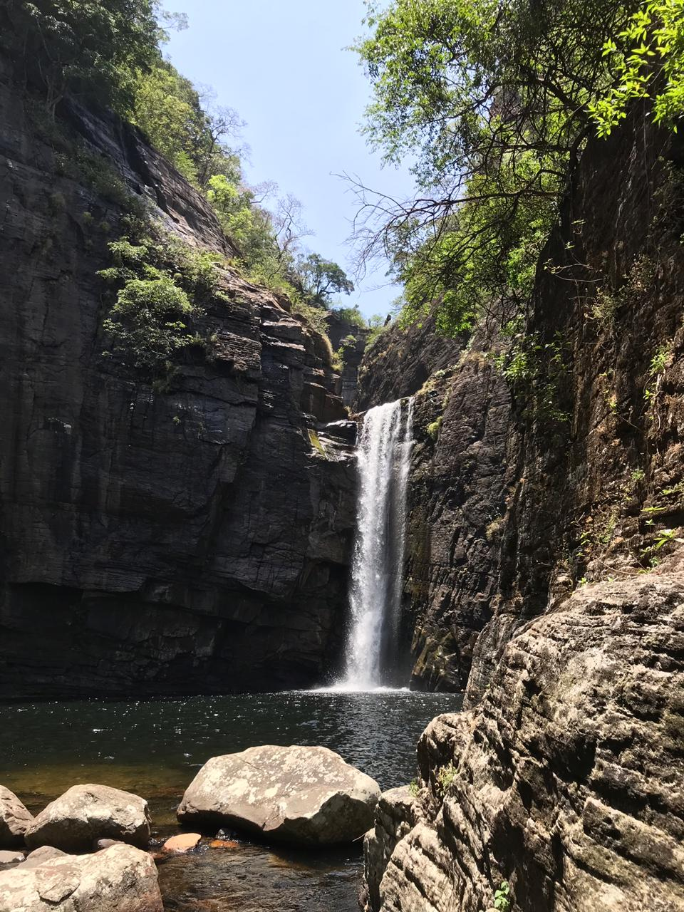
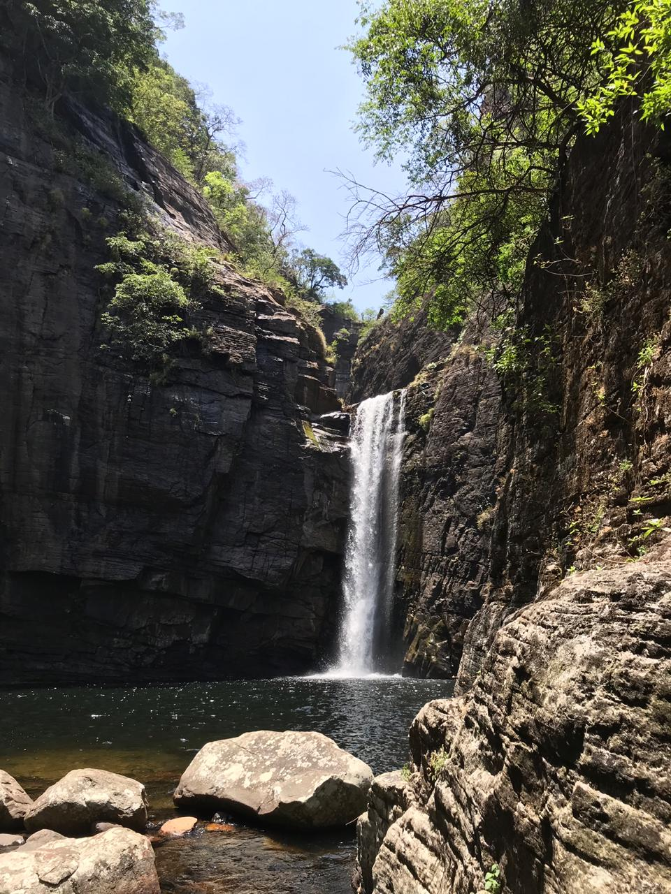
4. Knuckles Hike
The Knuckles mountain range is located in the Kandy and Matale districts and is traditionally named Dumbara Kanduvetiya. It features nine peaks over 1200m (4000ft). Popular walking routes in Knuckles include Nitro Caves, Mini World's End, Dothalugala Nature Trail, and Duwili Ella Trail. The ideal time for this hike is February/March and August/September. Both one-day and two-day hikes are available.


5. Riverstone hike
Riverstone is a forest located in the Matale district, approximately 30km from Matale town. The area features two beautiful waterfalls, "Sera Ella" and "Bambarakiri Ella," which contribute to the Thelgamu Oya. The climate is akin to that of the Horton Plains, and a two-kilometer hike leads to the mountaintop, offering a stunning 360-degree view on a clear day. Pitiwala Pathana is also a famous place around Riverstone.


6. Mandaram Nuwara hike
Mandaram Nuwara is a unique village located at the base of Piduruthalagala (Mount Pedro). The majority of the village is often enveloped in mist due to its proximity to the adjoining mountain range. The village is home to five main waterfalls, namely Elamulla Ella, Kabara-gala Ella, Digala Hinna Ella, Kalu Palam Ella, and Kolapathana Ella. This village is an ideal destination for a day trip due to its compact size and accessibility.


7. Horton National Park
The Horton Plains National Park is located in the Nuwara Eliya district, at an elevation of 2100-2300 meters (6900-7500 feet). This area boasts a rich biodiversity unique to Sri Lanka. One of its major attractions is Baker's Fall, a prominent waterfall. Another notable feature is World's End, a breathtaking viewpoint that, on a clear day, offers vistas extending to the south coast of Sri Lanka. The park is home to a diverse range of wildlife, including various species of birds, butterflies, Sambar deer, wild boar, wild hare, leopards, and giant squirrels. A hike through the park and plains typically takes approximately 3 hours to complete.
8. Ella Rock Hike
Ella is a city located in the Badulla district, and the optimal months for exploring Ella are March through June. Typically, the hike commences from Ella town, leading through picturesque countryside, verdant tea plantations, and quaint railway lines until reaching the summit of the rock. The hike generally spans a duration of 4 hours to complete.

9. Thotupala Kanda Hike
Thotupala Kanda is located in the Nuwara Eliya district and is the third highest mountain peak in Sri Lanka. Situated in the Horton Plains, this hike is not particularly challenging and generally takes around 1 hour to complete.
10. Kiribathgala Mountain Hike
Kiribathgala mountain is located in the Ratnapura district and is best climbed during the month of February. However, it is also possible to climb the mountain during other months without any issues. The hike entails traversing through a dry forest patch.
 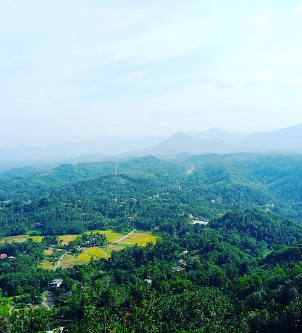
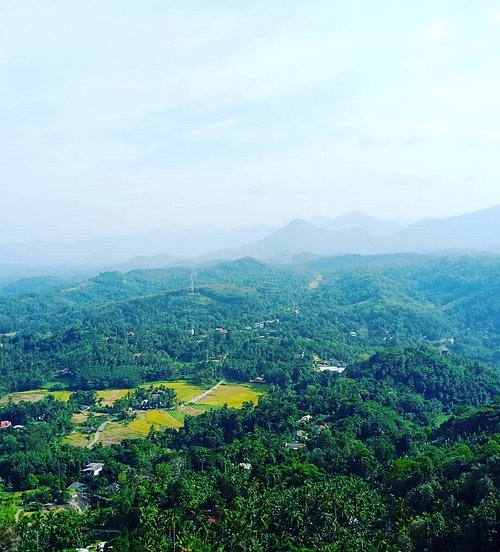
11. Uthuwankanda Hike
Uthuwankanda is a stunning mountain located in the Kegalle district. This mountain holds historical significance as it is associated with the Sri Lankan ancient hero, Saradiel, often regarded as a Sri Lankan counterpart to Robin Hood. Saradiel was known for his philanthropic acts of taking money from the wealthy and redistributing it among the less fortunate. Uthuwankanda served as his refuge and hideout. The ascent of this mountain is considered challenging, typically requiring 3-4 hours to complete. Upon reaching the summit, hikers can enjoy a picturesque view of the Kegalle district
12. Devil's Stairs Hike
Devil's Stairs is a renowned hiking trail located in the Central Highlands of Sri Lanka. The 13-kilometer route encompasses a particularly challenging 8.5-kilometer section, making it advisable for hikers to enlist the assistance of a knowledgeable guide. Upon reaching the apex, hikers are rewarded with a stunning panoramic view of the surrounding landscape.
View Points
1. Kandy View Point/ Arther's Seat
Arther's Seat is located in Rajaphilla Mawatha, Kandy, offering a remarkable panoramic view of Kandy Lake, Sri Dalada Maligawa, the Royal Palace of Kandy, and the city center.
 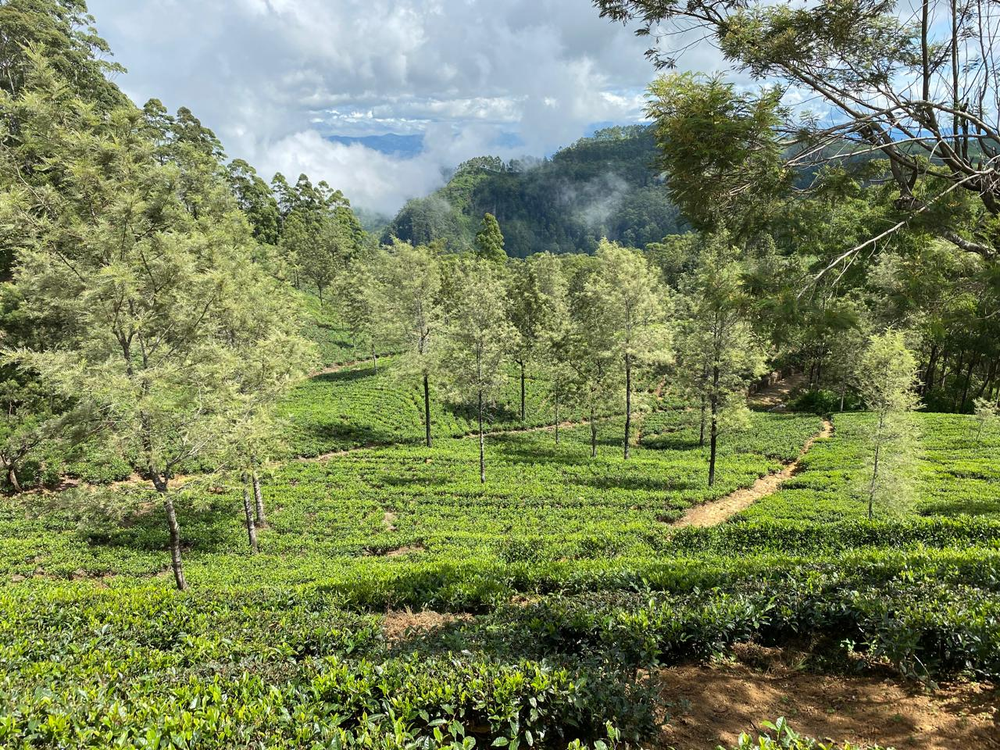
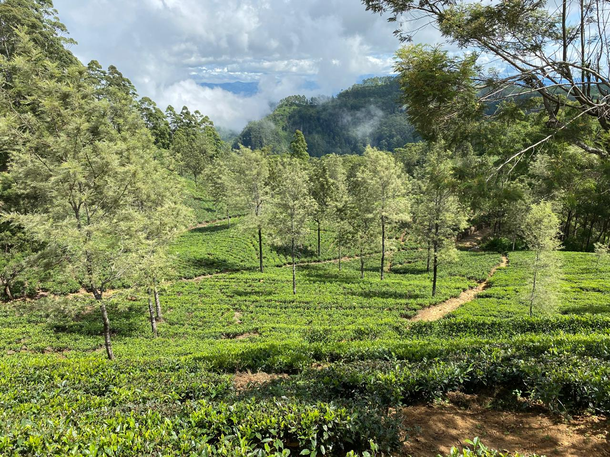

 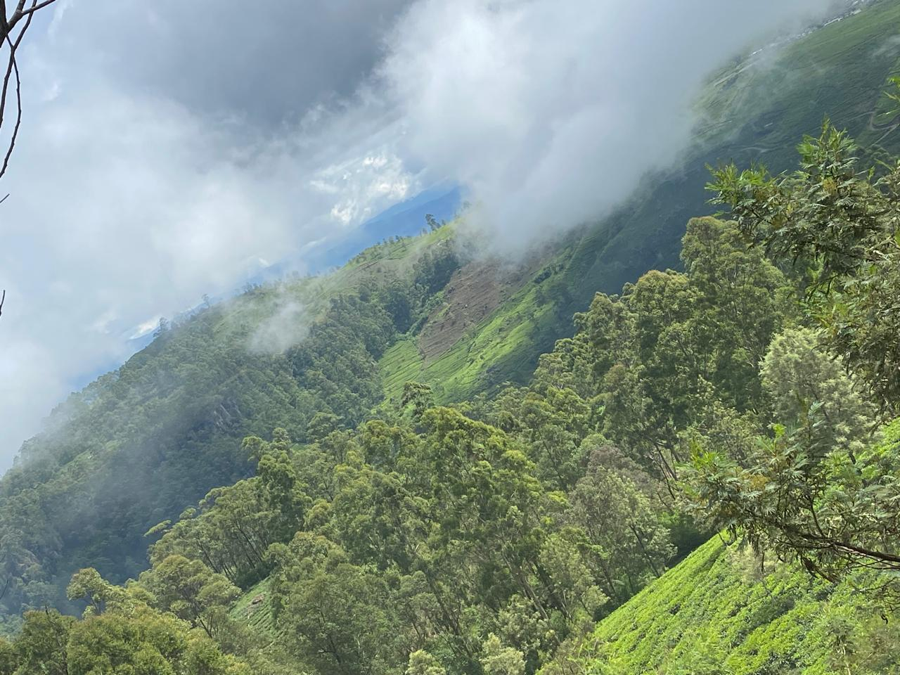
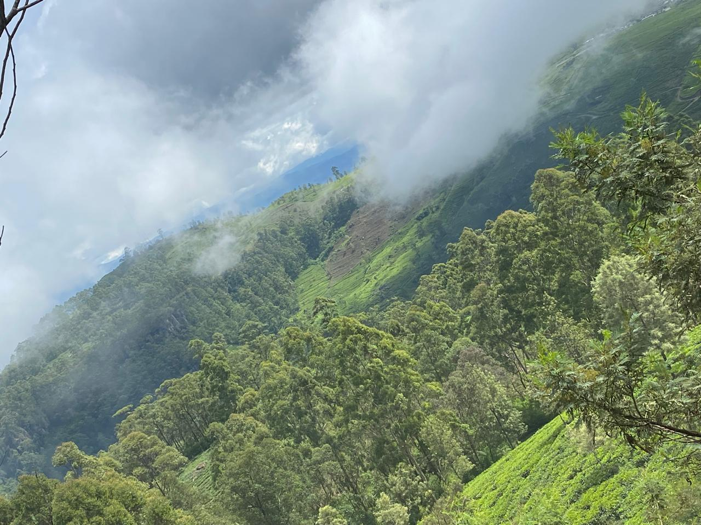
2. Lipton Seat
Lipton's Seat is situated in the Badulla district, nestled amidst the Dambatenne tea estate, with the nearest city being Haputale. The road spans 8 kilometers through the scenic tea plantations. On a clear day, this location offers breathtaking views that span nearly 5 provinces in Sri Lanka.
 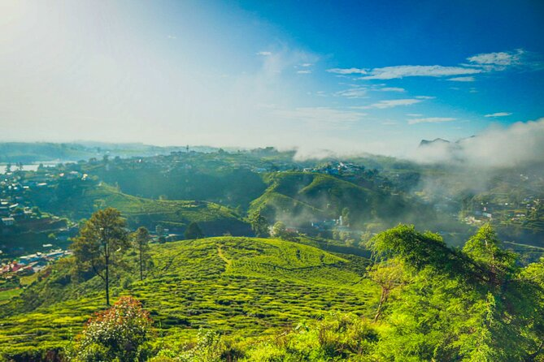
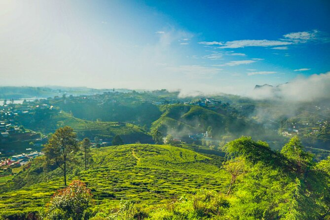
3. Single Hill Tree View Point
The Single Tree Hill, also known as One Tree Hill, is located in the Nuwara Eliya district and is home to a beautiful temple at its summit. From this vantage point, visitors can enjoy a panoramic 360-degree view that includes Piduruthagala mountain, Haggala mountain, Lake Gregory, the entire town of Nuwara-Eliya, as well as the northern section of Horton Plains.


 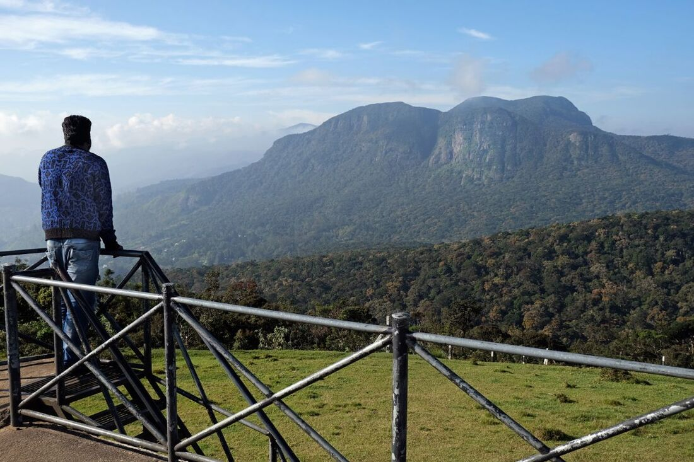
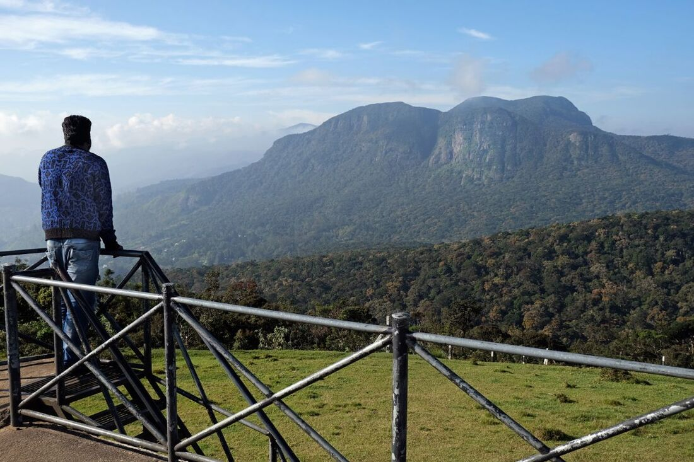
4. Moon Plains
The Moon Plains is a geographically specific viewpoint located in the Nuwara Eliya district, situated on the border of the Central Province and Uva Province. This vantage point offers an awe-inspiring panoramic view of the surrounding countryside and peaks. Visitors have the opportunity to observe deer, buffalo, leopards, as well as numerous bird species. The park is open from 7 a.m. to 4 p.m., with the exception of poya days and other religious holidays. Transportation to the top of the viewpoint can be arranged by hiring cabs.
5. Victoria Dam View Point
The Victoria Dam is an arch dam situated across the Mahaweli river in Tendeniya, Kandy District. It was named after Queen Victoria of the United Kingdom and is one of the primary hydroelectric power stations in Sri Lanka. Located at a distance of approximately one and a half hours' drive from the center of Kandy, the dam offers a picturesque view when the spill gates are opened.

 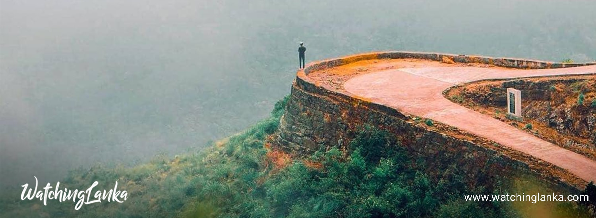
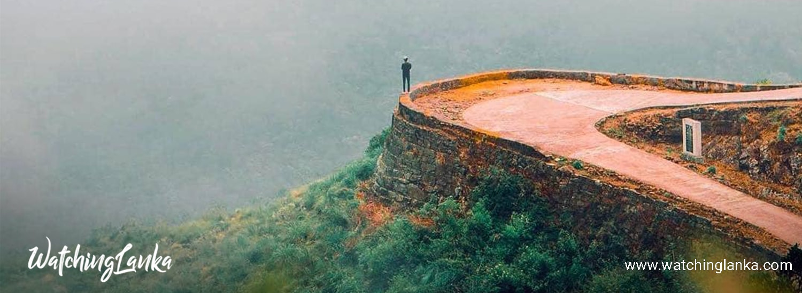
6. Baker's Bend
Baker's Bend stands as one of the most remarkable viewpoints in the Ratnapura District. Situated within the Nonpareil Estate, this distinctive horse-shaped bend offers breathtaking panoramic views of the surrounding landscape, including Balathuduwa, Gmmolikanda, the Adara Kanda Mountain range, Udawalawe Reservoir, and Samanalawewa Reservoir.
Gardens
1. Peradeniya Botenical Garden
The Peradeniya Botanic Garden, also known as the Royal Botanic Gardens, is located in Peradeniya, Kandy district. It covers a total area of 147 acres (0.59 km2) and is situated near the Mahaweli river. The garden is home to over 4000 species of plants, including orchids, spices, medicinal plants, and palm trees. It is an ideal destination for families, couples, and educational outings.

 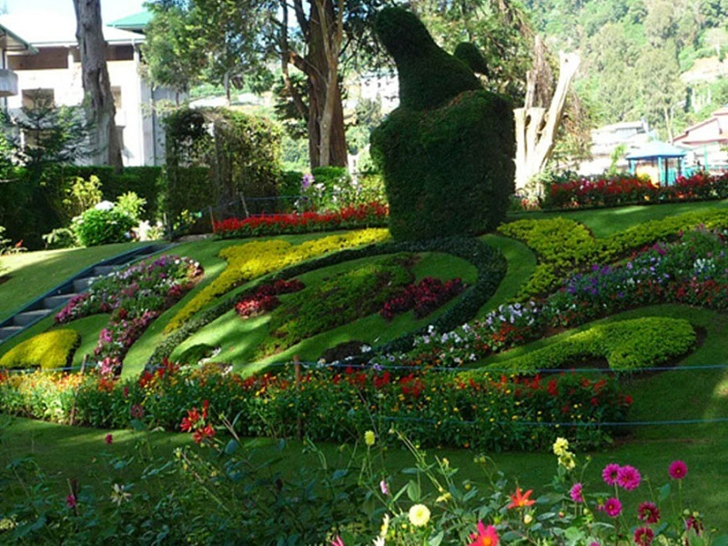
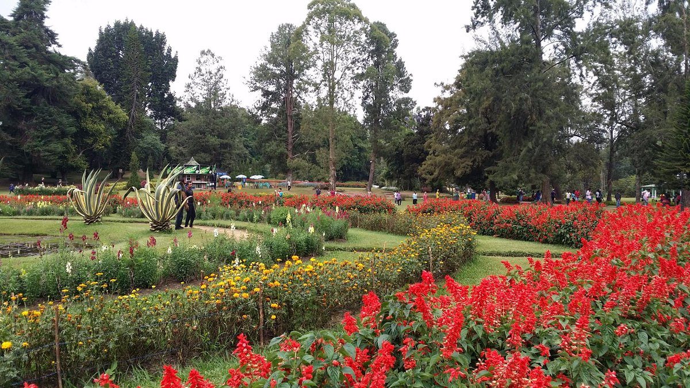
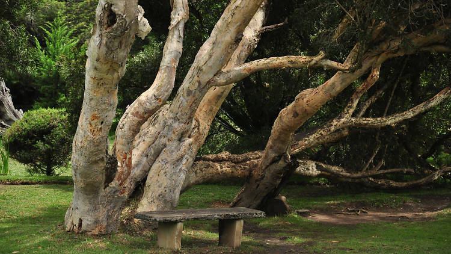
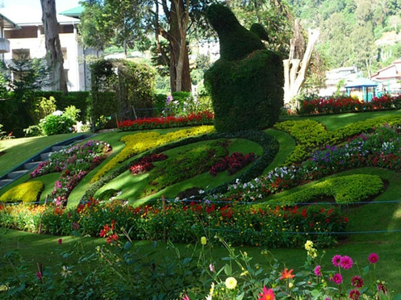
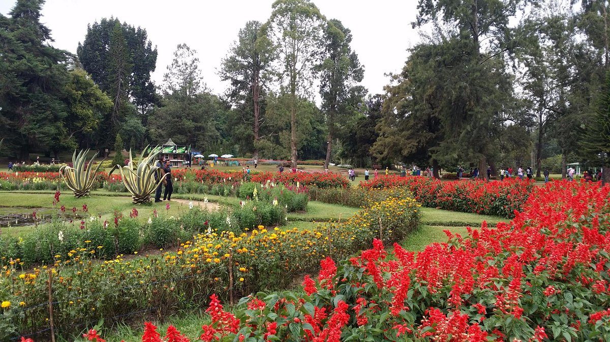
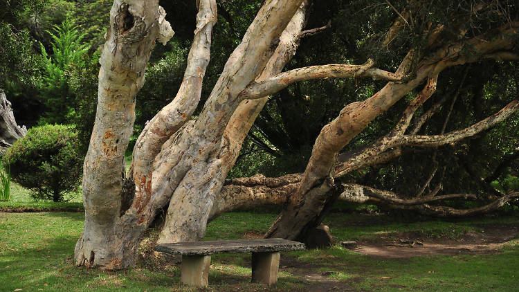
2. Victoria Garden
The Victoria Park, located in the Nuwara-Eliya district, is a picturesque botanical garden spanning 27 acres. Originally utilized as the research field of the Hakgala Botanical Garden, it was named after Queen Victoria of the United Kingdom. The park boasts a splendid array of flowers that are in full bloom during March, April, May, August, and September. The park is open to the public from 7:00 am to 6:00 pm.
 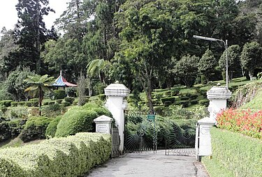
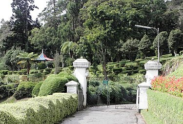

3. Haggala Botenical Garden
Hakgala Rock is located in the Central Highlands of Sri Lanka and covers an area of about 28 hectares. The optimal period to visit the gardens is from mid-March to the end of April.


4. Gregory Lake Park
Lake Gregory Park, located in Nuwara Eliya, is named after Sir William Gregory and was constructed in 1973. This park offers a variety of water activities and is an ideal location for family picnics. The best time to visit is from February to May.
Religious Places


1. Sri Dalada Maligawa
The Temple of the Sacred Tooth Relic is a world-renowned place of worship, where the left Canine tooth of Gautama Buddha is enshrine. The Sacred city of Kandy is the final location of the Sacred Tooth Relic of Gautama Buddha. The Sacred relic was brought to Sri Lanka by Princess Hemamala & Prince Dantha from the city of Kalinga in ancient India, during the reign of King Keerthi Sri Meghavarna (Kithsirimevan 301 -328). Protecting of the Sacred Tooth Relic and conducting religious rituals without a break is being carried out to the present day under the strict surveillance of the three chief custodians of the Tooth Relic, the most Venerable Mahanayake theros of Malwatta and Asgiriya chapters and the lay custodian, the Diyawadana Nilame.
2. Gatambe Temple
Gatambe temple is situated close to the Royal Botanical Garden of Peradeniya. This is one of the commonly worshipped places in Peradeniya and lies one side bordered by the Mahaweli River.
3. Adisham Bunglow
Adisham bungalow is situated in Badulla district. The Adisham Bungalow was once the country house of Sir Thomas Lester Villiers, but today it houses the Adisham Monastery of the St. Benedict. Constructed in 1931. Adisham Bungalow is perched on the edge of a cliff which is flanked by a larger outcrop fringed with tall pine trees, which somehow dwarf the house. The country home also has a wonderful view of the Uva valley, as well as a beautiful garden and orchard that you can stroll through. Access to the whole house is limited and visitors are only allowed to see the library and living room, but there is an adjoining guest house where people are more than welcomed to stay.

4. Ambuluwawa Temple
Ambuluwawa Temple is situated in Kandy District. There is a tower gives 360 degree view from the top. Do note that hiking Ambuluwawa is not at all dangerous or risky, but it would not be the ideal kind of adventure for those with a fear of heights. . Ambuluwawa is surrounded by many mountains including Piduruthalagala from the East, Bible Rock (Bathalegala) from the West, Sri Pada (Adam’s Peak) from the South and Knuckles Mountain Range from the North.